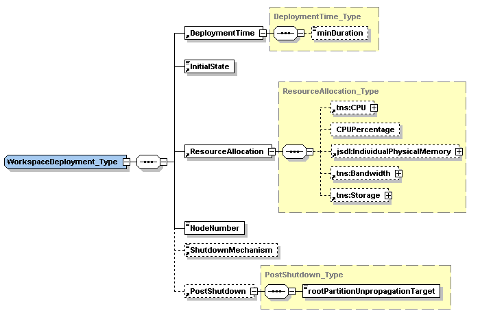

Because a workspace can be deployed in the context of many different resource allocations (for discussion, see the Virtual Workspaces paper, section 4), a separate schema is used to both request and describe deployment-only parameters.
When passed as a parameter to the factory create operation, this is treated as a deployment request and the deployment type can be filled in with ranges of values or exact requests.
However, once deployed only exact values are used and the type is exposed as a workspace resource property. If a deployment request is rejected, the factory service will return a fault (see the factory interfaces).
In future versions an authorized client will be able to request adjustments in the resouce allocation during deployment by setting the resource property. As a further refinement, a client will be able to negotiate the resource allocation.
A deployment type consists of
| DeploymentTime | Requested running time |
| WorkspaceState | Requested starting state |
| ResourceAllocation | Requested resource allocation |
| NodeNumber | Requested number of workspaces |
| ShutdownMechanism | Default shutdown mechanism (optional) |
| PostShutdown | Post shutdown requests (optional) |

You can view the WorkspaceDeployment_Type definition online in the deployment schema. You can also view a simple sample deployment request that is installed with this version of the workspace client.
The DeploymentTime element is an xsd duration value that in the factory create call represents the requested running time of the VM. This is not the duration until the WSRF resource is terminated, just the time from the first start to the last shutdown. This request is filtered through factory duration policies (see the factory page). When used in a workspace RP, this duration is the running time left in the current allocation (in this version this part of the RP is not currently updated).
The WorkspaceState element specifies the different states a workspace can be in during deployment. When specified in the request, it is a request for the service to only advance the workspace deployment to that specified state (default is Running). When specified as the workspace resource property, that signals the current state.
The WorkspaceState enumeration has these values:
Unstaged - The workspace's files are not staged to the site (within the trusted computing base (TCB)).
Unpropagated - The workspace's files are staged to the site (within the trusted computing base (TCB)).
Propagated - The workspace's files are staged to the physical hypervisor node where the workspace will be instantiated. This state can be reached before or after the workspace is running. For example, if a workspace is shutdown or serialized, it moves back to the Propagated state.
Running - The VM is running.
Paused - The VM is unscheduled from the VMM, but not serialized.
TransportReady - The workspace's files are packaged for transport after running and accessible from outside the TCB. This is different than Unpropagated: in the future it will imply that file digests have been taken and signatures applied to metadata if needed.
StagedOut - The workspace's files have been staged off-site, this is the final state possible in a 'normal' lifecycle.
Corrupted - A change to this state will be accompanied by a fault or server side error.
Cancelled - A change to this state implies the WSRF resource representing the workspace's state is being destroyed, along with all remaining artifacts that may have been left on the VMM node.
The ResourceAllocation element is used to request and describe allocations such as the VM's memory, CPU percentage, and extra storage requirements. The storage and bandwidth elements reference logical names in the workspace metadata (these are not currently supported, so we limit explanation).
Only the IndividualPhysicalMemory and Storage (blankspace) requests in the ResourceAllocation element are supported in this version. Client resource property modification that propagates changes to the workspace during deployment is not supported in this version.
The NodeNumber element is used to request that more than one workspace (a group request). The rest of the deployment request is taken to be for each of the group members. If the client for example requests 2G of memory in ResourceAllocation, that is not for all members of the group, but for each workspace.
For more information on group support, see the main interfaces page and the group service page.
The optional ShutdownMechanism element is used to request that when the running time is over, the workspace be shutdown in a different way than normal. Normally the workspace is shutdown gracefully and unpropagated. The optional values of ShutdownMechanism are:
The optional PostShutdown tasks element currently only contains rootPartitionUnpropagationTarget. This is for specifying an alternate URL for unpropagation. You can also specify this in a late binding way by calling on the shutdown-save operation with an alternate URL (see the reference client documentation for --shutdown-save).
If it is a group request (and hence starting from the same template image), then the workspace ID# will be appended on the end of each file to differentiate the images after running.
For a full discussion of the WorkspaceDeployment and its role in the overall workspace architecture, see the Virtual Workspaces paper, sections 4 and 5.